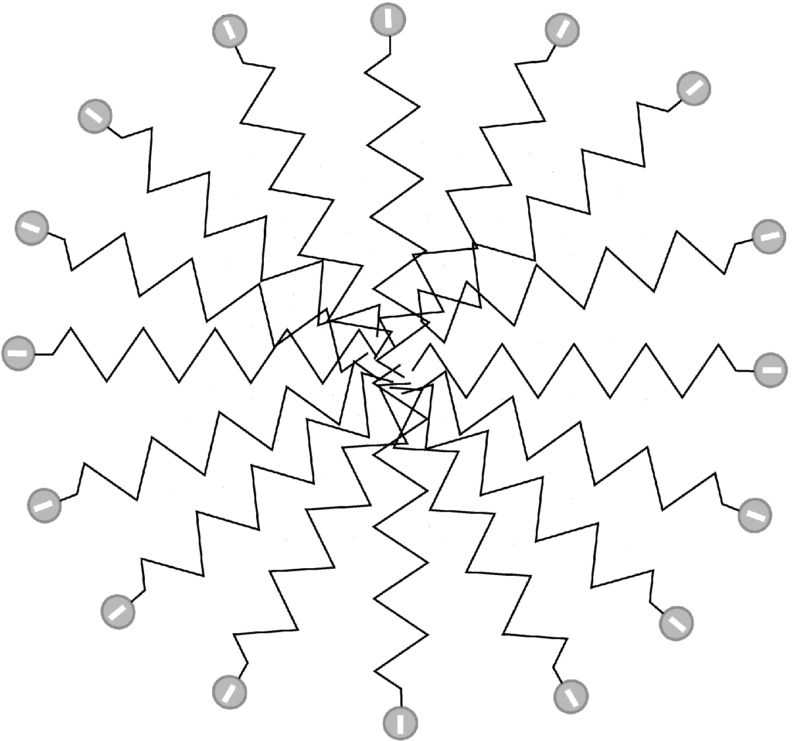
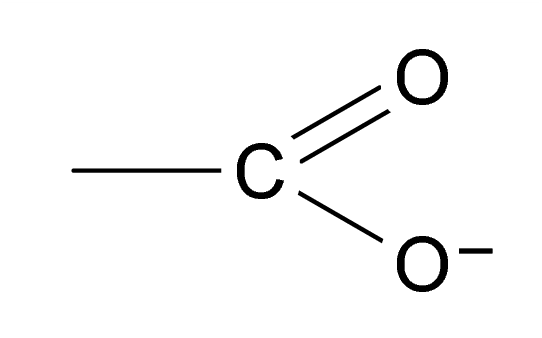
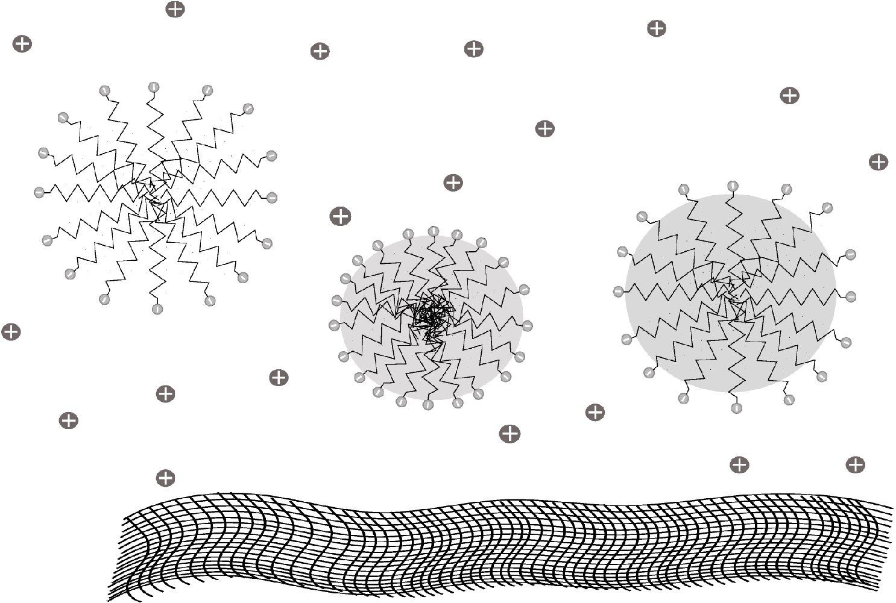
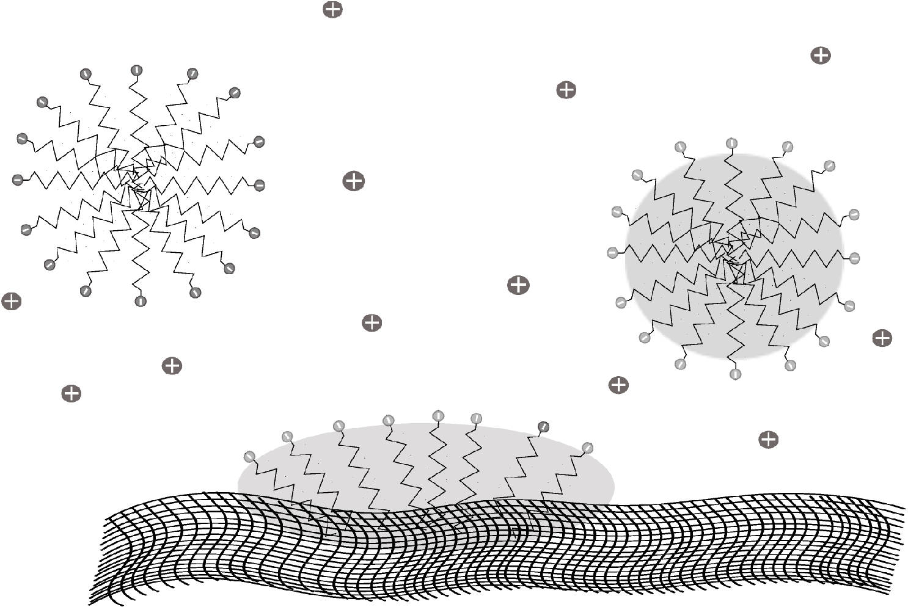
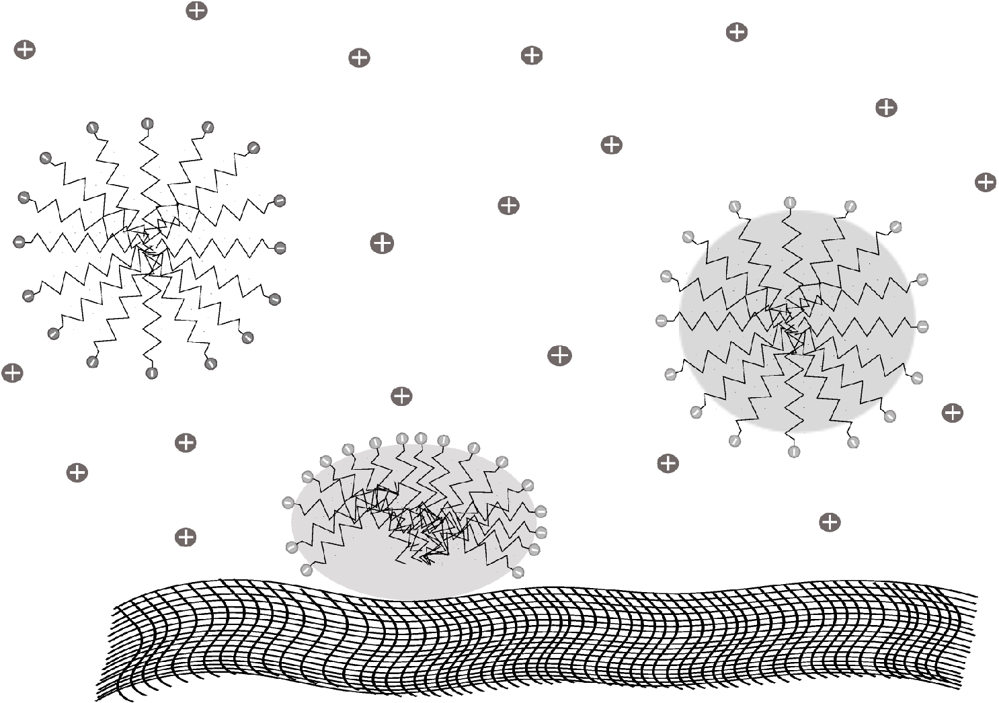
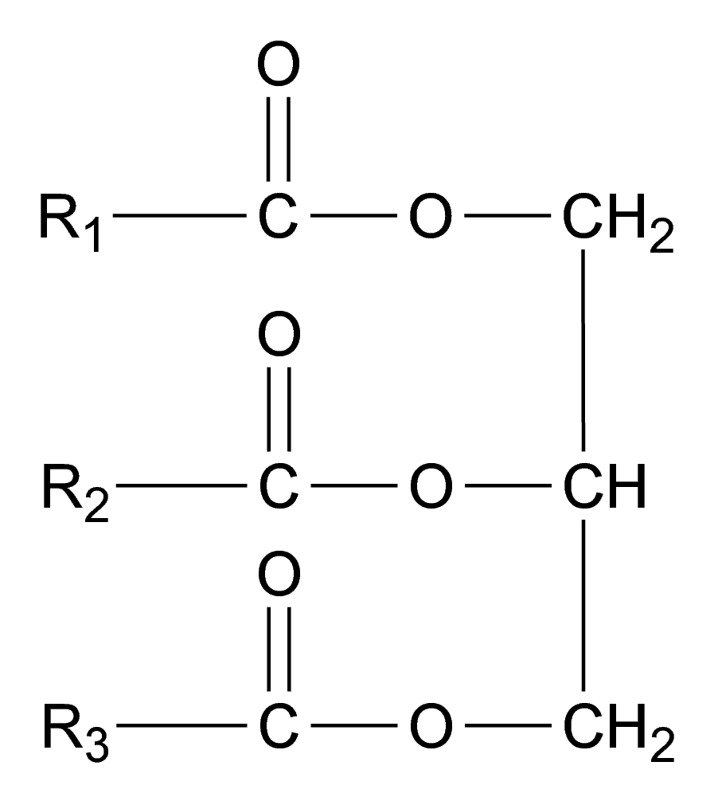
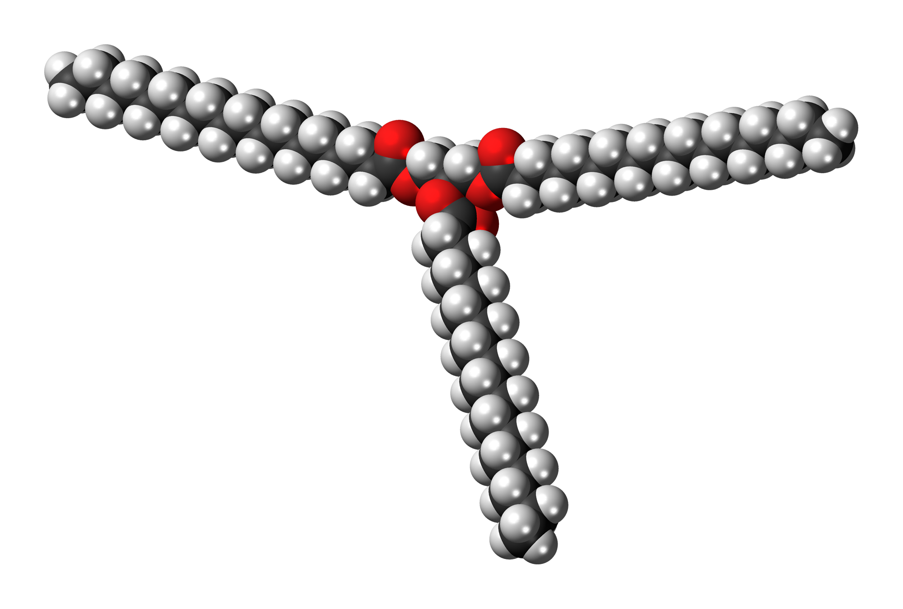

Caractère amphiphile des savons et solubilité dans l’eau
Les savons sont des sels alcalins d’acides gras de formule semi-développée $\ce{R-CO2^- (aq) + Na^+ (aq)}$ ou $\ce{R-CO2^- (aq) + K^+ (aq)}$ au sein desquels
$ce{R}$ est une longue chaîne carbonée.
Par exemple, le savon de Marseille a pour formule $\ce{CH3-(CH2)7-CH=CH-(CH2)7-CO2^- (aq) + Na^+ (aq)}$, l’ion oléate $\ce{CH3-(CH2)7-CH=CH-(CH2)7-CO2^- (aq)}$ ayant pour structure spatiale :

Les savons sont donc composés : − d’une partie hydrophile polaire, appelée la « tête »; − d’une partie hydrophobe apolaire, appelée la « queue ». On dit qu’ils sont « amphiphiles ».
Dans l’eau, les ions carboxylate se regroupent donc pour former des micelles : les parties hydrophobes qui « fuient » l’eau se rassemblent entre elles. La micelle est solubilisée grâce à l’affinité des têtes polaires pour l’eau.
- Remarque :
- jusqu’à présent, on a raisonné de façon assez binaire : les molécules étaient polaires ou apolaires. On voit ici que ces deux caractéristiques peuvent se rencontrer au sein d’une même molécule si sa taille est conséquente.
-
Pourquoi la longue chaîne carbonée, composée uniquement d’atomes de carbone et d’hydrogène, est-elle apolaire ?
-
Pourquoi le groupe carboxylate  est-il polaire ?
-
Que signifient « hydrophile » ? « hydrophobe » ?
-
Associer correctement les termes « polaire », « apolaire » avec « hydrophile », « hydrophobe ». Justifier la réponse.
-
Quand dit-on qu’une molécule est « amphiphile » ?
-
Expliquer ce qu’est une micelle.
Action détergente d’un savon
Les parties hydrophobes $\ce{R}$ des ions carboxylate sont solubles dans les huiles et les graisses « déposées » à la surface d’un tissu : elles sont lipophiles. Ainsi, les ions carboxylate peuvent pénétrer dans ces corps gras, diminuer l’intensité de leur interaction avec le tissu, jusqu’à les entraîner dans la solution. Les gouttelettes de corps gras se retrouvent alors enfermées dans un film polaire soluble dans l’eau. Ces nouvelles micelles, chargées négativement, se repoussent et se dispersent donc dans tout le volume du solvant ; il y a alors formation d’une émulsion. Finalement, le savon donne naissance à une mousse qui entraîne mécaniquement les micelles.
Action du savon sur un lipide déposé sur un tissu.

En solubilisant sa chaîne carbonée lipophile dans un corps gras et en gardant solubilisée dans l’eau sa tête hydrophile, un savon affaiblit l’interaction entre ce corps gras et le tissu (interaction appelée tension superficielle) : c’est un agent tensio-actif.
-
Les corps gras sont majoritairement constitués de triester du glycérol, de formule :  où $\ce{R1}$, $\ce{R2}$ et $\ce{R3}$ sont de très longues chaînes carbonées.
Par exemple, la stéarine ($\ce{C57H110O6}$) a pour structure :  À partir du nombre d’atomes de carbone et d’hydrogène (et donc du nombre de liaisons $\ce{C−H}$), indiquer si les corps gras sont hydrophiles ou hydrophobes. -
Les corps gras sont-ils solubles dans l’eau ?
-
Associer correctement les termes « polaire » et « apolaire » avec « lipophile » et « lipophobe ». Justifier la réponse.
-
Lorsque la tache n’est pas un corps gras mais une tache minérale de terre, le processus est un peu plus complexe, la tête hydrophile du savon se fixe dans la tache et une deuxième couche de savon vient alors se lier à la première par l’intermédiaire de leurs chaînes hydrophobes. Le nouvel ensemble constitue une micelle à deux couches et est alors soluble dans l’eau. Représenter cette micelle.
Rôle du cation dans un savon
Le cation associé à l’ion carboxylate joue un rôle très important, contrairement à ce que ce document pourrait laisser penser, jusqu’à présent.
Savons durs et savons mous
Il existe deux types de savons : les savons durs, fabriqués à base de soude ($\ce{Na+ (aq) + HO− (aq)}$) (appelés souvent par extension savons de Marseille) et les savons mous (ou noirs), fabriqués à base de potasse ($\ce{K+ (aq) + HO− (aq)}$). Ce savon est plus mous, plus pâteux.
Utilisation d’un savon dans une eau dure
Une eau dure est une eau qui contient beaucoup de sels1 dissous, comme les sels de calcium $\ce{Ca^{2+}}$ (le carbonate de calcium ou calcaire par exemple) et de magnésium $\ce{Mg^{2+}}$. À l’inverse, une eau douce est une eau qui en contient peu.
Les savons sont peu efficaces dans les eaux dures et dans les eaux ferrugineuses, riches en ions $\ce{Fe^{3+}}$. En effet, ils précipitent alors sous forme de sels d’acides gras de ces métaux, insolubles dans l’eau (écume, auréoles des lavabos ou baignoires, …) : $$ \ce{2 (R-CO2^- + Na^+ ) + (Ca^{2+} + SO4^{2-} ) -> (R-CO2^-)2Ca (s) + (2 Na^+ + SO4^{2-})} $$
Les savons précipitent également (phénomène de relargage), et perdent donc leur pouvoir moussant, dans l’eau salée.
- Est-il possible de se laver avec un savon à la mer ? Justifier la réponse.
-
Substance constituée par l’association de deux ions de charges opposées ; le plus connu est le sel de table ou chlorure de sodium, formé de l’association d’un ion sodium positif ($\ce{Na+}$) et d’un ion chlorure négatif ($\ce{Cl−}$). ↩︎